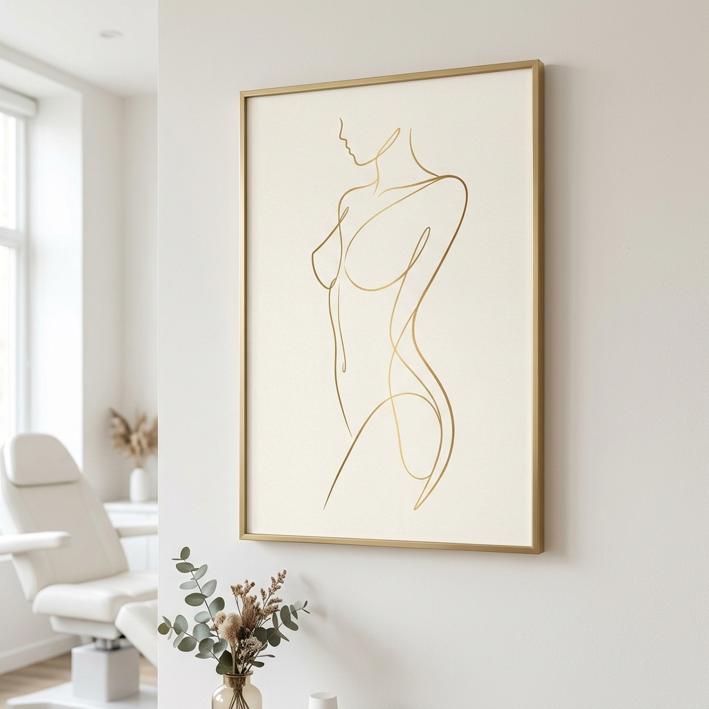
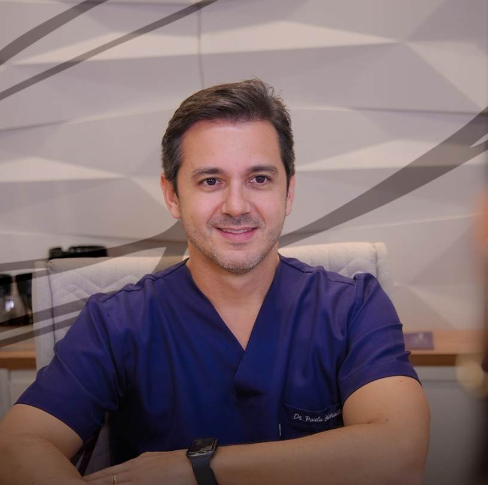

Mastopexia: remova o excesso de pele e gordura das suas mamas.
Recupere a firmeza, o contorno e a sua autoestima — com ou sem prótese de silicone, sob medida para a sua anatomia.
Você sente que o seu corpo mudou e suas mamas perderam a firmeza?
A Mastopexia é ideal para restaurar o contorno jovem e o posicionamento natural das mamas.
Flacidez Pós-Gestação
Após a amamentação ou gravidez, é comum que a mama perca volume e a pele fique flácida.
Oscilações de Peso
A perda de peso significativa faz com que o tissue mamário perca sustentação natural.
Envelhecimento Natural
Com o passar dos anos, a gravidade e a perda de colágeno reduzem a elasticidade da pele.
Mamas Assimétricas
Correção de diferenças visíveis de altura ou tamanho entre as mamas.
Sensação de "Vazio"
A sensação de que a mama perdeu o preenchimento na parte superior (o famoso colo).
Perda de Autoestima
Desconforto ao usar biquínis, decotes ou ao se olhar no espelho.
Você não precisa conviver com o desconforto estético.
Existe um planejamento sob medida focado em restabelecer a harmonia do seu corpo.
Falar com EspecialistaComo Funciona a Mastopexia?
Cada corpo é único. Por isso, a cirurgia é planejada de acordo com seus objetivos.
Mastopexia com Prótese
Indicada para quem, além de levantar as mamas, deseja repor ou aumentar o volume perdido. O implante de silicone preenche o colo, dando mais projeção e firmeza.
Mastopexia sem Prótese
Indicada para mulheres que já possuem tecido mamário suficiente. A cirurgia apenas remove a pele flácida excedente e remodela o próprio tecido para elevar o colo de forma natural.
Casos Clínicos (Antes e Depois)
Comparativos ilustrativos para fins didáticos. As imagens contêm desfoque (blur) nas áreas sensíveis, preservando a intimidade da paciente em total conformidade com as regras do CFM.

AntesCorreção de flacidez severa pós-amamentação (ptose grau II) com inclusão de implante de silicone (300ml) para preenchimento de colo.
Remodelação das mamas com retirada de excesso de pele e elevação do colo utilizando apenas o próprio tecido, sem uso de próteses.
Segurança absoluta em cada detalhe do procedimento
Realizar uma cirurgia plástica é um sonho que deve ser conduzido com responsabilidade ética e rigor técnico médico.
Estrutura Hospitalar de Ponta
Realizamos os procedimentos exclusivamente em hospitais credenciados e equipados com CTI, garantindo suporte completo para sua segurança.
Equipe Anestésica Dedicada
Profissional especializado acompanha você desde a consulta pré-anestésica até a alta médica completa.
Protocolo Pós-Operatório Acompanhado
Oferecemos canais de atendimento direto e retornos programados para acompanhar cada dia da sua evolução e cicatrização.
O que dizem nossas pacientes
Relatos reais de mulheres que transformaram sua autoestima e recuperaram sua segurança com o Dr. Paulo.
"A atenção do Dr. Paulo e de toda a equipe no pós-operatório foi o diferencial para mim. Me senti segura desde a primeira consulta até a alta final. O resultado ficou super natural!"
"Após a amamentação de dois filhos, minhas mamas ficaram muito flácidas. A cirurgia devolveu minha autoestima de uma forma que eu não achei que seria possível. Recomendo de olhos fechados."
"Pesquisei muito antes de operar e o que mais me chamou a atenção no Dr. Paulo foi o rigor com a segurança. A cirurgia em hospital de ponta me deu toda a tranquilidade que eu precisava."

Dr. Paulo
Cirurgião Plástico especializado em cirurgias de contorno corporal e mamoplastias. Com ampla experiência clínica e dedicação acadêmica constante, o Dr. Paulo atua focado em alcançar resultados que valorizam a beleza natural e a harmonia de cada paciente.
Seu atendimento pauta-se no respeito, na escuta ativa das expectativas e em fornecer informações detalhadas e realistas sobre cada procedimento.
- Especialista em Mama
- Foco em Naturalidade
- Segurança Centrada na Paciente
Dúvidas Frequentes
Confira as respostas para as principais perguntas sobre a cirurgia de Mastopexia.
A cicatriz varia de acordo com a quantidade de pele removida. Os formatos mais comuns são o T invertido, em L, ou ao redor da aréola (periareolar). O Dr. Paulo utiliza técnicas de sutura refinadas e prescreve protocolos pós-operatórios específicos para otimizar a cicatrização, deixando-a o mais fina e discreta possível.
A maioria das pacientes consegue retornar a atividades leves de escritório em 7 a 14 dias. Contudo, é fundamental evitar esforços físicos, carregar peso ou elevar os braços acima dos ombros por cerca de 30 dias. A liberação para atividades físicas intensas ocorre gradativamente a partir do segundo mês.
A prótese de silicone ajuda a preencher melhor o polo superior (colo) e a sustentar o formato da mama a longo prazo. No entanto, o fator determinante para a durabilidade do resultado é a qualidade da pele e a manutenção do peso pós-cirurgia, independentemente do uso de implantes.
A dor é relativa, mas costuma ser leve e plenamente controlável com os analgésicos e anti-inflamatórios receitados pelo médico. Há uma sensação de peso e tensão nas mamas nos primeiros dias, o que é perfeitamente normal e melhora com o repouso e uso do sutiã cirúrgico.